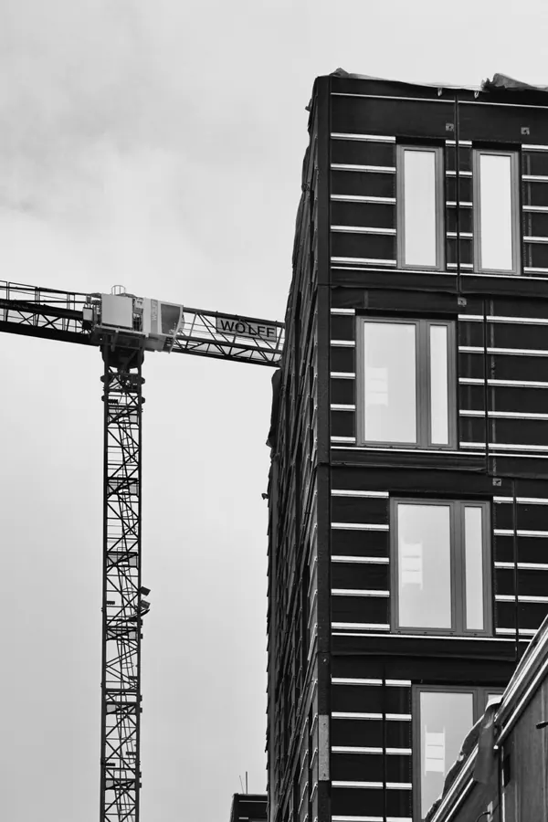

Neubau Bürogebäude mit parametrisch entwickelter Fassade Mit der 2024 fertiggestellten Erweiterung der TÜV SÜD Konzernzentrale in München wurde ein zukunftsweisendes …
TÜV SÜD, München
Neubau Bürogebäude mit parametrisch entwickelter Fassade
Mit der 2024 fertiggestellten Erweiterung der TÜV SÜD Konzernzentrale in München wurde ein zukunftsweisendes Verwaltungsgebäude realisiert, das Nachhaltigkeit, digitale Planung und architektonische Qualität auf vorbildliche Weise vereint. Unter dem Projekttitel „Parametrical Spotlight“ steht der Neubau exemplarisch für eine Architektur, die Gestaltung, Funktion und Energieeffizienz in einem ganzheitlichen Ansatz zusammenführt.
Mit flexiblen, nutzerfreundlichen Raumstrukturen und hochwertiger Ausstattung bietet das Gebäude Arbeitsplätze für bis zu 600 Mitarbeitende und setzt mit „Parametrical Spotlight“ einen neuen Maßstab für zukunftsfähige Arbeitswelten im urbanen Kontext.
Nachhaltig leistungsfähig: Fassadenentwicklung mit Algorithmen
Das Gebäude zeichnet sich durch eine filigrane Holzrahmenbauweise und große Solarläden aus, die für abgestimmtes Licht in allen Ebenen sorgen. Die Größe der Fensterelemente basiert auf parametrischem Design und genau berechneten Positions- sowie Breitenparametern. Die Fassadengestaltung reagiert auf äußere Einflüsse wie den Sonnenverlauf, die Verschattung der umliegenden Bebauung und die Windbelastung. Das Ergebnis ist ein harmonisches Fassaden-Design, das über die rein funktionale Ausrichtung hinausgeht. Die Verschattungselemente passen sich im Tagesverlauf je nach Sonnenstand an, um den Büronutzern einen optimalen Umgang mit Sonneneinstrahlung und Tageslicht zu ermöglichen. Photovoltaikmodule in den Elementen dienen als Energieträger und gewährleisten gleichzeitig eine gute Sicht nach außen. Das Projekt verdeutlicht die Verschmelzung von Ökologie, Wissenschaft und Kunst durch den Einsatz von Algorithmen, was zu einem neuen Entwurfs- und Konstruktionsprozess führt.
Parametrisches Design und der Einsatz von Algorithmen
Bei einem unserem aktuellen Neubauprojekte haben wir durch die Anwendung von Algorithmen zur optimalen Erfüllung dieser Ansprüche, in Verbindung mit mathematisch rationaler und intuitiver Herangehensweise, einen völlig neunen Entwurfs- und Konstruktionsprozess entstehen lassen. Die Dimensionen der Fensterelemente des neuen TÜV Süd-Gebäudes in München werden durch den Einsatz von parametrischem Design und präzise kalkulierte Positionen und Breitenparameter bestimmt.
Competition
Algorithmen zur optimalen Erfüllung der Ansprüche
In Process
Parametrisches Design regelt Wärmehaushalt
Die Integration von Photovoltaik-Modulen an der Süd- und Westseite dient nicht nur als Energiequelle, sondern betont auch das Engagement für Nachhaltigkeit und Klimaneutralität. Das Fassadenkonzept nutzt generatives Design und Computer-Gestaltung, um verschiedene Lösungen zu entdecken und zu simulieren. Die dynamische Lichtoptimierung und effektive Nutzung des natürlichen Tageslichts reduzieren den Energieverbrauch erheblich, was zu geringeren Betriebskosten und einem kleineren ökologischen Fußabdruck führt.
Der Einsatz von generativem Design und Computer-Gestaltung ermöglicht den Planern, verschiedene Lösungen mit unterschiedlichen Merkmalen zu entdecken und zu simulieren. Durch die dynamische Lichtoptimierung und effektive Nutzung des natürlichen Tageslichts wird der Energieverbrauch erheblich reduziert, was zu geringeren Betriebskosten und einem kleineren ökologischen Fußabdruck führt. Gleichzeitig trägt der kontrollierte Lichteinfall zur Regulierung der Innentemperaturen bei und minimiert Blendung, was den Komfort der Gebäudenutzer verbessert.
Für eine nachhaltige Betreibung des Gebäudes erfolgen Kühlung und Beheizung größtenteils über einen eigenen Grundwasserbrunnen, ergänzt durch Fernwärme. Die innovative Technologie, die bei diesem Projekt zum Einsatz kam, vereint Fortschrittlichkeit, Nachhaltigkeit und künstlerischen Ausdruck, um Gebäude zu schaffen, die mit ihrer Umgebung harmonieren und zugleich einen geringen Energieverbrauch aufweisen.
Construction

Construction
Effiziente BIM-Planung: Die nachhaltige Neugestaltung der TÜV-SÜD-Konzernzentrale in München
COMPLETED
Digitalisierung sichert Optimierung in jeder Projektphase
Die Zusammenarbeit zwischen Brückner Architekten und dem Auftraggeber TÜV SÜD konzentriert sich auf zukunftsweisende Themen wie Building Information Modelling (BIM) und papierlose Baustellen. Bei der Umsetzung des Gebäudes werden modernste digitale und agile Methoden verwendet, die eine ganzheitliche Betrachtung ermöglichen und eine kostensichere, planungssichere und prozessoptimierte Umsetzung von Bauprojekten gewährleisten. Die agilen Methoden ermöglichen es, Herausforderungen im Bau herausragend und zeiteffizient zu lösen. Der gestaltete Raum entsteht durch konsequente Teamarbeit, geprägt von gegenseitiger Wertschätzung und Selbstreflexion.
Hocheffizientes Energiekonzept
Die Nutzung von BIM als Planungs- und Steuerungsmethode stellt nicht nur ein effektives Wissensmanagement im gesamten Projektzyklus sicher, sondern ermöglicht auch die Echtzeit-Optimierung von Entwürfen und eine flexible Reaktion auf neue Herausforderungen. Die Digitalisierung der Baustelle, einschließlich digitalem Mängelmanagement, führt nicht nur zu einer Ressourcenschonung, sondern verbessert auch die Zusammenarbeit und Effizienz vor Ort erheblich.
Auszeichnungen:
German Design Award 2026 ICONIC aWARD 2022 (iNNOVATIVE ARCHITECTURE)
LEISTUNG: Generalplanung, nachhaltige Energiekonzepte, Parametrische Architektur, BIM
Neubau eines innovativen Bürogebäudes mit 6 oberirdischen und 2 unterirdischen Geschossen. Das städtebauliche Konzept ermöglicht eine optimale Anbindung an Bestandsgebäude bei einem möglichen 2. Bauabschnitt. Die parametrisch entworfene Fassade reagiert auf äußere Einflüsse wie Sonnenverlauf und Verschattung, gewährleistet eine gleichmäßige natürliche Belichtung in allen Räumen und ermöglicht flexible Wandstellungen durch eine durchdachte TGA-Planung.
Wir haben ihr Interesse geweckt? Sie haben Fragen oder wollen einen Termin mit uns vereinbaren? Dann hinterlassen Sie uns bitte eine Nachricht.
Wenn Sie uns eine Nachricht per Kontaktformular senden, so erheben, speichern und verarbeiten wir Ihre Daten nur, soweit dies für die Abwicklung Ihrer Anfragen und für die Korrespondenz mit Ihnen erforderlich ist. Hier finden Sie unsere Datenschutzerklärung.
Hinweis: Leider können wir aufgrund aktueller betrieblicher Umstände derzeit keine Schülerpraktika anbieten. Wir hoffen auf Ihr Verständnis und stehen für zukünftige Möglichkeiten gerne zur Verfügung. Vielen Dank.
Brückner Architekten GmbH Gabriel-Max-Straße 4 81545 München
BRÜCKNERINNEN Interior
REON Realisierung
PROPERTYMAX Maximales Baurecht
TGA Süddeutschland GmbH
Rendeffect GmbH
Wir haben IhrInteresse geweckt?
Sie haben Fragen oder wollen einen Termin vereinbaren?